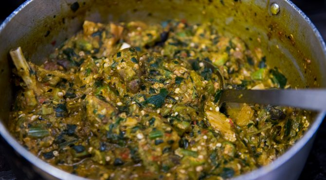

Okra Soup

Description
If you're a novice Nigerian trying to make it in this Naija life, you need to have a staple Nigerian dish.
Look no further. OKRA STEW is here :)
It is classic. It is hearty. It is simple. People will think you have lived in Nigeria your whole life when..you haven't.
Feast on...
credit to https://www.allnigerianrecipes.com/soups/okra-okro-soup/
Ingredients
- 5 cups (250g) Okra
- 3 cooking spoons red palm oil
- Beef: Best cut
- Shaki (Cow Tripe) (Optional)
- Fish: Iced Fish (Mackerel/Titus), Dry Fish, Stock Fish
- 1 handful crayfish
- Pepper and Salt (to taste)
- Onions (optional)
- Vegetable: Nigerian pumpkin leaves or spinach (fresh or frozen)
- 3 stock/boullion cubes
Before you cook Okra Soup
- About two hours before preparing the soup, boil the stockfish for 20 minutes and leave in the pot with the hot water to soak. There's a type of stockfish that I buy in Nigeria that does not need all that soaking.
- Cut the okra fingers into tiny pieces. The tinier you cut the okra, the more it will draw. To achieve this, you need to make a few vertical cuts followed by horizontal cuts on the okra fingers.
- Grind the crayfish and the dry pepper.
- Wash the pumpkin leaves, if it is your choice of vegetable, and cut into tiny pieces. If you will use frozen spinach, defrost and cut into tiny pieces.
Cooking Steps
- If you will use shaki (cow tripe) for the soup, wash and boil till it is done. Add water sparingly because this soup needs to be thick. Add the soaked stockfish and dry fish to the cooked shaki. The length of time it will take to cook shaki depends on the cooking appliance utilized. You can take a bite to confirm this.
- When you are happy that the shaki and stock fish are well-done, add the beef, onions and stock cubes and cook till done. Then add the iced fish and cook till done
- Pour red palm oil in another pot and heat the pot to dissolve the oil if it is congealed. Add the diced okra and start frying to kick-start the drawing process, add some meat stock from time to time till you notice the okra start to draw. This process should take a maximum of 5 mins to avoid over-cooking the okra.
- Now add the vegetable and stir well. Add all the meat and fish, crayfish, pepper and salt to taste. Then stir well.
- Cover the cooking pot and leave to simmer and it is ready to be served.
Homepage